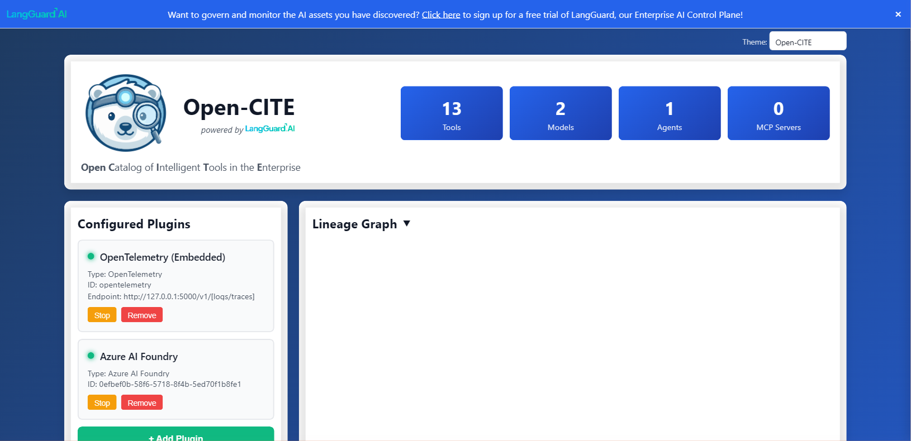
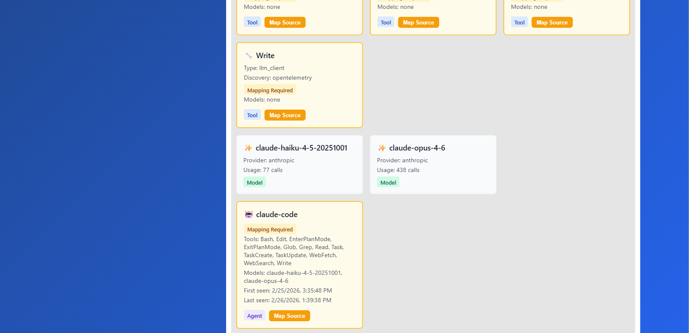
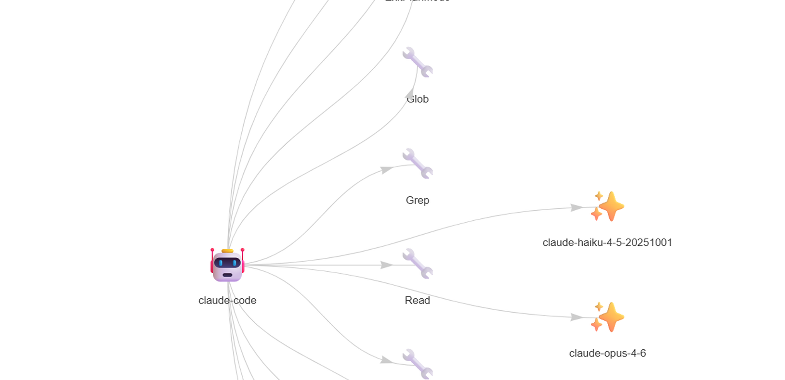

Open Catalog of Intelligent Tools in the Enterprise
Discover and catalog every AI tool, model, and agent across your enterprise — from a single pane of glass.
Open-CITE (pronounced "Open-Sight") is an open-source Python library, service, and application for discovering and cataloging AI/ML assets across your entire organization. It connects to your cloud platforms, collects traces from your AI agents, and builds a unified inventory of every tool, model, endpoint, and agent in your enterprise.
Run it as a GUI for interactive exploration, a headless API for automation, a Python library in your own code, or a containerized service in Docker and Kubernetes. Its plugin architecture means you only enable the discovery sources you need.
Automatic discovery of AI/ML resources across Databricks, AWS, Google Cloud, Azure, and more — all from a single tool.
Built-in OTLP receiver for real-time trace collection. Discover tools and models automatically from your AI agent telemetry.
Extensible plugin system lets you add support for any platform. Enable only the discovery sources you need.
Visualize relationships between tools, models, and agents with interactive network graphs showing how your AI assets connect.
Export all discoveries in a standardized JSON format for downstream processing, governance tools, and compliance workflows.
Run as a Python library, interactive GUI, headless REST API, or containerized service in Docker and Kubernetes.

The main dashboard shows discovery statistics, configured plugins with live status, and an interactive lineage graph.

The asset grid displays all discovered tools with type badges, discovery source, and mapping controls.

Interactive lineage graphs reveal how tools, models, and agents connect across your organization.
Connect to the AI platforms you already use
Up and running in under a minute
# Create a virtual environment and install
python3 -m venv venv
source venv/bin/activate
pip install -e .python -m open_cite.gui.app
# Open http://localhost:5000 in your browserClick "+ Add Plugin" in the sidebar, select your platform (Databricks, AWS, Azure, Google Cloud, or OpenTelemetry), and enter your credentials.
Assets appear automatically as Open-CITE scans your environment. View tools, models, agents, and lineage in real time.
Enable only the discovery sources you need
Want to govern and monitor your AI assets? Try LangGuard's AI Control Plane.
Visit LangGuard.AI